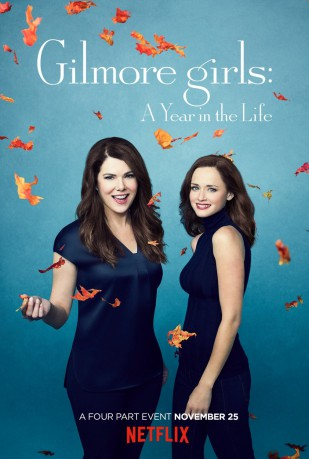

IMDB-Wertung: 7.9 / 10
IMDB-Wertung: 7.9 / 10  Metascore:
Metascore: 
Set nearly a decade after the finale of the original series, this revival follows Lorelai, Rory and Emily Gilmore through four seasons of change.
Alternativ: Gilmore Girls: A Year in the Life
 IMDB-Wertung: 7.9 / 10 Metascore:
Set nearly a decade after the finale of the original series, this revival follows Lorelai, Rory and Emily Gilmore through four seasons of change.
Jahr: 2016
Dauer: 90 Minuten
FSK:
Land: USA Studio: NetflixTonspuren: DD5.1 - ,
Untertitel: Deutsch, Englisch,
Auflösung: 720p (1280x720) Größe: 2826 MB
Genre: Drama, Komödie, TV-Serie
Regisseur: Daniel Palladino, Amy Sherman-Palladino
Drehbuch: Amy Sherman-Palladino
Soundtrack:
Darsteller:
 Lauren Graham als Lorelai Gilmore 4 episodes, 2016
Lauren Graham als Lorelai Gilmore 4 episodes, 2016 Alexis Bledel als Rory Gilmore 4 episodes, 2016
Alexis Bledel als Rory Gilmore 4 episodes, 2016 Scott Patterson als Luke Danes 4 episodes, 2016
Scott Patterson als Luke Danes 4 episodes, 2016 Rose Abdoo als Berta / ... 4 episodes, 2016
Rose Abdoo als Berta / ... 4 episodes, 2016 Frank Gallegos als Alejandro 4 episodes, 2016
Frank Gallegos als Alejandro 4 episodes, 2016 Sean Gunn als Kirk Gleason 3 episodes, 2016
Sean Gunn als Kirk Gleason 3 episodes, 2016 Ray Wise als Jack Smith 3 episodes, 2016
Ray Wise als Jack Smith 3 episodes, 2016 Milo Ventimiglia als Jess Mariano 2 episodes, 2016
Milo Ventimiglia als Jess Mariano 2 episodes, 2016 Alex Kingston als Naomi Shropshire 2 episodes, 2016
Alex Kingston als Naomi Shropshire 2 episodes, 2016 Jackie Hoffman als Esther 2 episodes, 2016
Jackie Hoffman als Esther 2 episodes, 2016 Alex Borstein als Drella / ... 2 episodes, 2016
Alex Borstein als Drella / ... 2 episodes, 2016 Danny Strong als Doyle 2 episodes, 2016
Danny Strong als Doyle 2 episodes, 2016 Carolyn Hennesy als Toni 2 episodes, 2016
Carolyn Hennesy als Toni 2 episodes, 2016 Brian Tarantina als Bootsy 2 episodes, 2016
Brian Tarantina als Bootsy 2 episodes, 2016 Charles C. Stevenson Jr. als Charlie 2 episodes, 2016
Charles C. Stevenson Jr. als Charlie 2 episodes, 2016 Melissa McCarthy als Sookie St. James 1 episode, 2016
Melissa McCarthy als Sookie St. James 1 episode, 2016 Jared Padalecki als Dean Forester 1 episode, 2016
Jared Padalecki als Dean Forester 1 episode, 2016 Jason Ritter als Ranger Bill 1 episode, 2016
Jason Ritter als Ranger Bill 1 episode, 2016 Jason Mantzoukas als Robert Castellanos 1 episode, 2016
Jason Mantzoukas als Robert Castellanos 1 episode, 2016Datei: X:\HD-Serien\Gilmore Girls Ein neues Jahr S01\Gilmore Girls Ein neues Jahr S01E01 Winter.mkv seit 04.12.2017
Festplatte: HD Serien(A-H)
 Es gibt insgesamt 182 Filme in der Gruppe 'HD-Serien'
Es gibt insgesamt 182 Filme in der Gruppe 'HD-Serien'